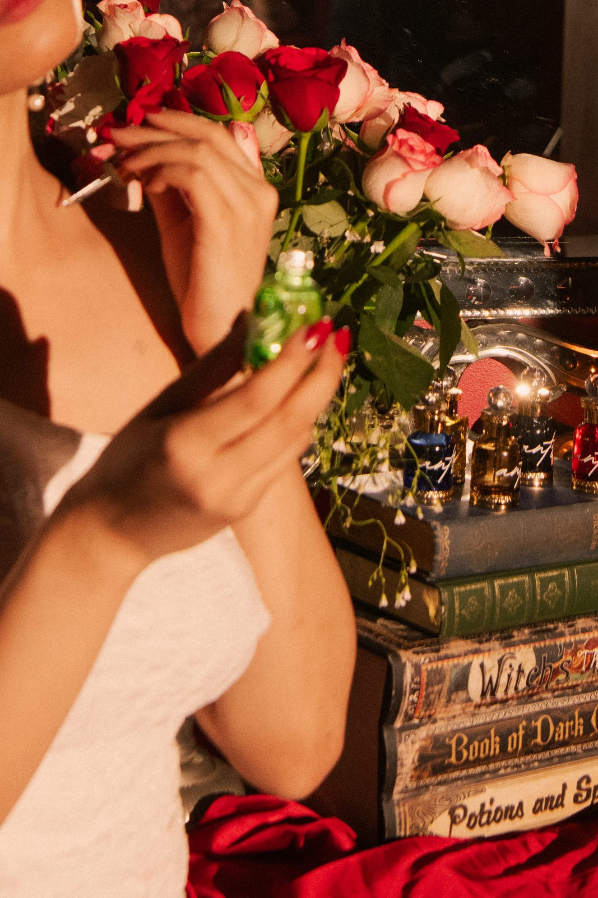

Home / Our Story
A testament to the power of the divine feminine — a revolution led by women, for women.
Antra is more than just a business—it is a celebration of resilience, and a revolution led by women, for women. Born from the intertwined journeys of a mother and her daughter, Antra is a manifestation of their shared belief in the transformative energy of Shakti, the cosmic feminine force that flows through every woman.
The story of Antra begins with the mother, a woman who embraced the challenges of single parenting with unwavering determination. She faced societal judgment, financial struggle, and the weight of raising her child alone. Yet through it all, she found strength in her connection to nature and the simple, grounding rituals of self-care.
With a background in botany, she discovered solace in the scents of essential oils, herbs, and flowers — her sanctuary amidst the chaos of life. These aromas were not just fragrances; they were reminders of her inner power. As her daughter grew, she shared this love, teaching her about the healing properties of plants and the importance of staying connected to the earth.
The daughter’s path was one of spiritual exploration. She found herself drawn to the ancient practices of Shakti Tantra — a philosophy that reveres the divine feminine as the ultimate source of creation, power, and transformation. Through her studies, she began to see women not just as survivors, but as warriors, creators, and revolutionaries.
The revolution she had been searching for was not out in the world—it was within women themselves.
Her calling became clear: to help women reconnect with their inner Shakti, to awaken the divine feminine energy that resides within each of them.
The idea for Antra was born during a heartfelt conversation between mother and daughter. The mother dreamed of a line of natural products capturing the essence of her favourite herbs; the daughter spoke of creating something to empower women on a deeper level. Their visions were not separate but intertwined — a natural skincare and perfume brand that would delight the senses and serve as a tool for women to reconnect with their power.
Every Antra product is crafted with intention, blending rare essential oils, absolutes, and botanical extracts that evoke the energy of the divine feminine. Each scent is inspired by the qualities of Shakti — strength, sensuality, creativity, and transformation.
For the mother-daughter duo, Antra is more than a brand—it is a movement. We believe that when women embrace their divine feminine energy, they become unstoppable forces of change. Through Antra, we aim to create a community of women who support and uplift one another, who celebrate their individuality, and who recognise the power of their collective strength.
Every woman has the potential to create her own revolution.
This is the story of Antra—a story of love, purpose, and the divine feminine.
Transparency & Ingredients
Transparency isn’t a marketing trick — it’s integral to how we create. We share not only what goes into our bottles, but also what we leave out.
Perfume can be a veil of mystery without hiding the truth.